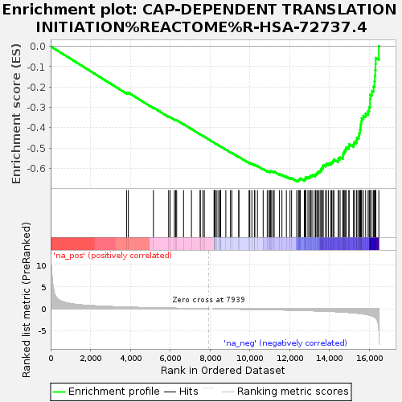
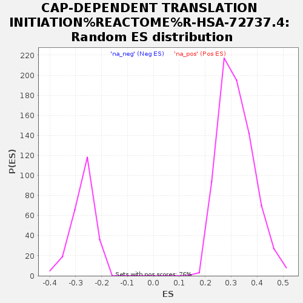

| | | Dataset | ranked_gene_list |
| Phenotype | NoPhenotypeAvailable |
| Upregulated in class | na_neg |
| GeneSet | CAP-DEPENDENT TRANSLATION INITIATION%REACTOME%R-HSA-72737.4 |
| Enrichment Score (ES) | -0.664222 |
| Normalized Enrichment Score (NES) | -2.456787 |
| Nominal p-value | 0.0 |
| FDR q-value | 0.0 |
| FWER p-Value | 0.0 |
Table: GSEA Results Summary

Fig 1: Enrichment plot: CAP-DEPENDENT TRANSLATION INITIATION%REACTOME%R-HSA-72737.4
Profile of the Running ES Score & Positions of GeneSet Members on the Rank Ordered List
| SYMBOL | RANK IN GENE LIST | RANK METRIC SCORE | RUNNING ES | CORE ENRICHMENT | | 1 | RPL36 | 3812 | 0.367 | -0.2274 | No |
| 2 | RPL35 | 3900 | 0.354 | -0.2275 | No |
| 3 | EIF4G1 | 5161 | 0.209 | -0.3014 | No |
| 4 | RPL39L | 5925 | 0.141 | -0.3459 | No |
| 5 | RPL28 | 6000 | 0.134 | -0.3485 | No |
| 6 | RPL18A | 6214 | 0.117 | -0.3598 | No |
| 7 | RPS15 | 6277 | 0.112 | -0.3619 | No |
| 8 | RPL36AL | 6328 | 0.109 | -0.3634 | No |
| 9 | RPLP2 | 6674 | 0.082 | -0.3833 | No |
| 10 | RPS19 | 7070 | 0.056 | -0.4066 | No |
| 11 | RPS11 | 7510 | 0.026 | -0.4330 | No |
| 12 | RPL19 | 7512 | 0.026 | -0.4326 | No |
| 13 | EIF3K | 7645 | 0.018 | -0.4404 | No |
| 14 | RPS5 | 7718 | 0.013 | -0.4446 | No |
| 15 | EIF4A2 | 8206 | -0.003 | -0.4743 | No |
| 16 | RPS9 | 8230 | -0.004 | -0.4757 | No |
| 17 | RPL39 | 8251 | -0.006 | -0.4768 | No |
| 18 | EIF5B | 8271 | -0.006 | -0.4779 | No |
| 19 | RPS27L | 8352 | -0.010 | -0.4826 | No |
| 20 | RPL38 | 8439 | -0.015 | -0.4877 | No |
| 21 | EIF2S1 | 8509 | -0.019 | -0.4916 | No |
| 22 | RPS28 | 8530 | -0.021 | -0.4925 | No |
| 23 | RPS26 | 8537 | -0.021 | -0.4926 | No |
| 24 | UBA52 | 8797 | -0.038 | -0.5078 | No |
| 25 | RPL13 | 9029 | -0.053 | -0.5212 | No |
| 26 | FAU | 9098 | -0.057 | -0.5245 | No |
| 27 | RPL26L1 | 9445 | -0.080 | -0.5444 | No |
| 28 | RPL29 | 9452 | -0.080 | -0.5436 | No |
| 29 | EIF3G | 9964 | -0.117 | -0.5731 | No |
| 30 | EIF3B | 10000 | -0.120 | -0.5735 | No |
| 31 | RPL22L1 | 10105 | -0.129 | -0.5780 | No |
| 32 | RPLP1 | 10245 | -0.139 | -0.5845 | No |
| 33 | RPL18 | 10248 | -0.139 | -0.5826 | No |
| 34 | RPS27 | 10385 | -0.150 | -0.5887 | No |
| 35 | EIF3J | 10672 | -0.173 | -0.6036 | No |
| 36 | RPL36A | 10876 | -0.189 | -0.6132 | No |
| 37 | RPS18 | 10962 | -0.198 | -0.6156 | No |
| 38 | EIF4EBP1 | 11016 | -0.203 | -0.6158 | No |
| 39 | EIF4H | 11037 | -0.205 | -0.6141 | No |
| 40 | RPS10 | 11095 | -0.209 | -0.6145 | No |
| 41 | RPS24 | 11179 | -0.217 | -0.6164 | No |
| 42 | RPL23A | 11224 | -0.221 | -0.6159 | No |
| 43 | RPL37 | 11491 | -0.247 | -0.6285 | No |
| 44 | RPL12 | 11615 | -0.260 | -0.6322 | No |
| 45 | RPL30 | 11837 | -0.285 | -0.6416 | No |
| 46 | RPL8 | 12021 | -0.303 | -0.6483 | No |
| 47 | RPL10 | 12099 | -0.312 | -0.6485 | No |
| 48 | EIF2S2 | 12356 | -0.339 | -0.6592 | Yes |
| 49 | EIF4E | 12440 | -0.350 | -0.6591 | Yes |
| 50 | EIF4A1 | 12478 | -0.353 | -0.6562 | Yes |
| 51 | RPS4Y1 | 12511 | -0.356 | -0.6530 | Yes |
| 52 | RPL26 | 12534 | -0.359 | -0.6491 | Yes |
| 53 | EIF2B5 | 12739 | -0.388 | -0.6559 | Yes |
| 54 | RPS29 | 12768 | -0.391 | -0.6519 | Yes |
| 55 | RPL32 | 12806 | -0.395 | -0.6484 | Yes |
| 56 | RPL27 | 12810 | -0.397 | -0.6428 | Yes |
| 57 | RPS13 | 12921 | -0.413 | -0.6435 | Yes |
| 58 | RPL11 | 12997 | -0.425 | -0.6419 | Yes |
| 59 | EIF3F | 13051 | -0.431 | -0.6388 | Yes |
| 60 | RPL37A | 13083 | -0.436 | -0.6344 | Yes |
| 61 | EIF3M | 13163 | -0.448 | -0.6326 | Yes |
| 62 | RPL13A | 13281 | -0.465 | -0.6330 | Yes |
| 63 | RPL35A | 13308 | -0.471 | -0.6277 | Yes |
| 64 | RPS16 | 13367 | -0.481 | -0.6243 | Yes |
| 65 | RPL41 | 13410 | -0.487 | -0.6197 | Yes |
| 66 | RPLP0 | 13453 | -0.492 | -0.6151 | Yes |
| 67 | RPSA | 13530 | -0.502 | -0.6124 | Yes |
| 68 | RPS17 | 13584 | -0.511 | -0.6082 | Yes |
| 69 | EIF2B1 | 13588 | -0.511 | -0.6009 | Yes |
| 70 | RPS2 | 13658 | -0.519 | -0.5976 | Yes |
| 71 | RPL17 | 13669 | -0.520 | -0.5906 | Yes |
| 72 | RPS25 | 13686 | -0.522 | -0.5840 | Yes |
| 73 | EIF3I | 13810 | -0.543 | -0.5836 | Yes |
| 74 | EIF2B4 | 13846 | -0.550 | -0.5777 | Yes |
| 75 | RPS15A | 13945 | -0.570 | -0.5754 | Yes |
| 76 | RPL24 | 14074 | -0.597 | -0.5745 | Yes |
| 77 | RPS21 | 14116 | -0.604 | -0.5682 | Yes |
| 78 | RPL31 | 14179 | -0.616 | -0.5630 | Yes |
| 79 | RPS8 | 14225 | -0.625 | -0.5566 | Yes |
| 80 | RPL34 | 14443 | -0.675 | -0.5600 | Yes |
| 81 | RPS12 | 14450 | -0.676 | -0.5505 | Yes |
| 82 | RPL27A | 14535 | -0.704 | -0.5454 | Yes |
| 83 | RPL10A | 14673 | -0.741 | -0.5429 | Yes |
| 84 | EIF3H | 14679 | -0.742 | -0.5324 | Yes |
| 85 | RPS14 | 14707 | -0.748 | -0.5232 | Yes |
| 86 | RPL3 | 14747 | -0.759 | -0.5145 | Yes |
| 87 | RPS7 | 14809 | -0.778 | -0.5069 | Yes |
| 88 | EIF5 | 14840 | -0.789 | -0.4972 | Yes |
| 89 | EIF3C | 14975 | -0.836 | -0.4932 | Yes |
| 90 | RPL14 | 14985 | -0.842 | -0.4815 | Yes |
| 91 | RPS4X | 15209 | -0.920 | -0.4817 | Yes |
| 92 | RPS27A | 15248 | -0.937 | -0.4703 | Yes |
| 93 | RPS3 | 15355 | -0.980 | -0.4625 | Yes |
| 94 | RPL22 | 15380 | -0.989 | -0.4496 | Yes |
| 95 | RPS3A | 15470 | -1.040 | -0.4398 | Yes |
| 96 | RPL4 | 15494 | -1.052 | -0.4259 | Yes |
| 97 | RPL21 | 15537 | -1.075 | -0.4128 | Yes |
| 98 | RPL7A | 15558 | -1.083 | -0.3982 | Yes |
| 99 | EIF2B2 | 15570 | -1.090 | -0.3830 | Yes |
| 100 | EIF2S3 | 15598 | -1.106 | -0.3685 | Yes |
| 101 | RPS23 | 15619 | -1.117 | -0.3535 | Yes |
| 102 | EIF1AX | 15703 | -1.171 | -0.3415 | Yes |
| 103 | EIF3A | 15817 | -1.264 | -0.3299 | Yes |
| 104 | EIF3D | 15943 | -1.367 | -0.3176 | Yes |
| 105 | RPS6 | 15997 | -1.428 | -0.3000 | Yes |
| 106 | RPL6 | 16036 | -1.492 | -0.2806 | Yes |
| 107 | RPL15 | 16037 | -1.493 | -0.2588 | Yes |
| 108 | RPS20 | 16047 | -1.502 | -0.2375 | Yes |
| 109 | EIF3E | 16139 | -1.637 | -0.2192 | Yes |
| 110 | RPL7 | 16215 | -1.794 | -0.1976 | Yes |
| 111 | EIF2B3 | 16260 | -1.908 | -0.1725 | Yes |
| 112 | EIF3L | 16281 | -1.965 | -0.1451 | Yes |
| 113 | RPL5 | 16300 | -2.017 | -0.1167 | Yes |
| 114 | PABPC1 | 16314 | -2.075 | -0.0873 | Yes |
| 115 | RPL23 | 16323 | -2.115 | -0.0569 | Yes |
| 116 | EIF4B | 16481 | -4.624 | 0.0009 | Yes |
Table: GSEA details [plain text format]

Fig 2: CAP-DEPENDENT TRANSLATION INITIATION%REACTOME%R-HSA-72737.4: Random ES distribution
Gene set null distribution of ES for CAP-DEPENDENT TRANSLATION INITIATION%REACTOME%R-HSA-72737.4